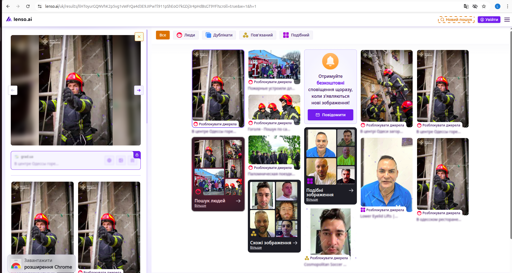
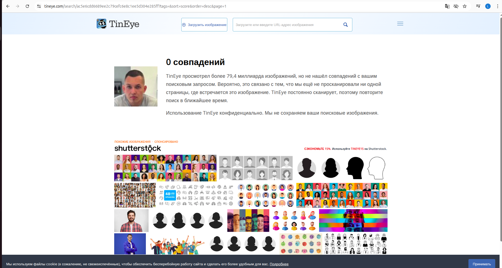
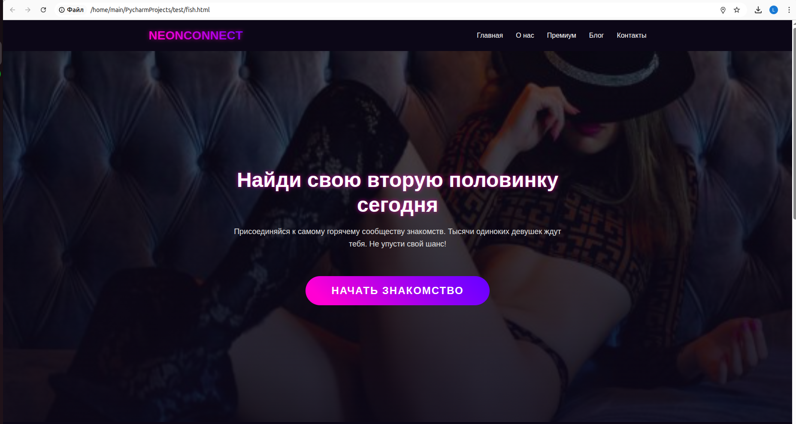
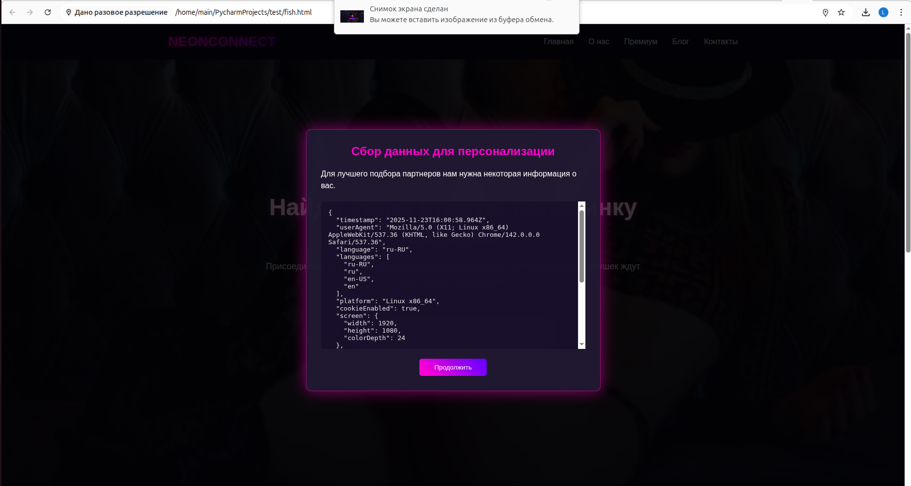

Історія пошуку Негідника
Передісторія
Історія почалася після невеликої ДТП. Негідник врізався в мій автомобіль: без трагедій, але ремонт був необхідний. Я оформив усе офіційно через страхову — процедура зрозуміла й стандартна. За умовами страхового договору частину суми, а саме франшизу, повинен був сплатити винуватець особисто.
Я зв’язався з Негідником так, як це робить будь-яка адекватна людина: написав йому в Telegram, пояснив ситуацію, додав документи, попросив вийти на зв’язок. Відповіді не було. Він бачив повідомлення, але ігнорував, ніби проблема зникне сама по собі.
Коли стало зрозуміло, що нормального діалогу не буде, мені стало цікаво його знайти та я почав невеликий OSINT-пошук і розібратися, хто такий цей Негідник і як з ним все-таки можна зв’язатися.
Початкова перевірка
У мене був тільки його телеграм та й аватар, номер був теж прихований. Для того, щоб отримати номер телефону я використав бота "глаз бога" для пошуку інформації та "telesint", щоб зрозуміти його інтереси.
| Загальна інформація | |
|---|---|
| ID | 5118779999 |
| Телефон | +380635870983 |
| Ім’я (Telegram) | Дмитро |
| ПІБ (версія бази) | Чернишенко Дмитро |
| Дата народження (Одноклассники) | 01.11.1991 |
| Вік | 31 |
| Стать | Чоловіча |
| Місто | Kyiv |
| Країна | Україна |
| Цікавилися цим | 1 |
| Історія зміни імені | |
| 16.07.2025 | @dimmchik12847, Дмитро, 5118779999 |
| 13.05.2024 | @Dimchik1223, 5118779999 |
| 13.05.2024 | @dimchik444, 5118779999 |
| Додаткові дані | |
| СНІЛС | — |
| ІПН | — |
| — | |
| Автомобілі | — |
| Особи | Vertol Kuznecov, 01.11.1991 |
| Паспорт | — |
| Адреса | — |
| Місце народження | — |
| Водійське посвідчення | Міжнародний сервіс перевезень 2024 |
| Пристрій | |
| Версія застосунку | 4.28.1 |
| Версія ОС | Android 11 |
| Модель пристрою | Redmi Note 9 Pro (joyeuse) |
| Оператор зв’язку | |
| Країна | Україна |
| Оператор | Life:) |
| Телефонна книга (можливі імена) | |
| Vertol Kuznecov, Діма Авенсіс, Діма Автосалон, Діма ДСНС Одеса, Діма Чернешенко, Діма Чернишенко Учебка, ДімаЧернешенко, Кашеглот, Пропущенный 2, чернышенко | |
| Одноклассники | |
| OID | 559427304684 |
| Профіль | OK профіль |
| Дата створення | 2013-05-18 |
| Дата оновлення | 2013-05-16 |
| Telegram | |
| Telegram ID | 5118779999 |
| Телефон | +380635870983 |
| Логін | dimmchik12847 |
| Дата зміни | 2025-07-16 13:57:00 |
| Профіль | Telegram |
| TikTok | |
| ID | 7424640793065522182 |
| Логін | alex838745 |
| Профіль | TikTok |
| Відкриті групи | |
|---|---|
|
@sexmeetodessa – Одеса: спонсори та утриманки @bpu_info – Чат Бойкот Пожежних України @sponsoryodessy – Утриманки Одеси @spilkyvanya_v_davinshi – Шо шо чат |
Після збору інформації на цьому етапі я дізнався його номер та, ймовірно, його TikTok, бо він був підписаний на рієлтора з Одеси, а також знайшов історію зміни нікнеймів що може бути корисним.
Декілька груп явно натякали на певну сферу діяльності, пов’язану з пожежною службою. Тобто з’явилася перша гіпотеза щодо можливої професії Негідника.
Але підтвердження поки що не було — треба було шукати далі.
Пошук за фото
Я завантажив його аватар і запустив реверс-пошук. Використав усе доступне:
- Google — порожньо
- Yandex — нічого
- Bing — нічого
Зате сервіс розпізнавання облич https://pimeyes.com дав одразу кілька збігів — ті самі фотографії людини у формі, зроблені на різних подіях, і всі — з новинних сайтів.

Контекст знімків збігався з раніше знайденими інтересами. Картинка почала складатися.
link1
link2
link3
Сервіс lenso.ai знайшов ті самі фото, що й pimeyes.

Tineye — порожньо...

Тепер у мене з’явилися кілька ідей, як його знайти.
Перший варіант — створити фейковий акаунт рієлтора з дуже вигідними пропозиціями та організувати зустріч.
Другий варіант — зробити фейковий сайт знайомств із привабливими дівчатами, адже він був підписаний на «Утримання Одеси», «Спонсори та утриманки».
Все ж я вирішив почати із сайту знайомств, адже він хлопець і, керуючись простим інтересом, точно перейде за посиланням.
Багато часу та бажання займатися розробкою фронтенду у мене не було, та й зробити все красиво власними силами я навряд чи зміг би.
Тому я використав мовну модель DeepSeek — вона створює фронтенд значно краще, ніж GPT.
Сайт виглядає ось так так, так робить збір геолокації,IP-адреси,метаданих браузера та в оригіналі відправляв мені в телеграм але тут спливаюче вікно >>>САЙТ<<<


Коли вже дійшло до того, щоб надсилати йому посилання, я раптом зрозумів, що все зайшло надто далеко. Це вже було схоже не на розслідування, а на переслідування. Я витратив на це чимало часу лише заради того, щоб повернути ці копійки.
Урешті-решт я вирішив залишити його в спокої — зрештою, він не така вже й погана людина. Та й пожежник усе-таки, людей рятує!